第 20 讲：Python 安装和环境设置（5.2）
在前面的章节中，我们完成了基于 Next.js 的全栈前端项目开发，并通过两种不同方式完成了自动化部署。从本节开始，我们的全栈探索之旅将正式跨入后端开发领域。
后端编程的第一步，正如前端开发需要预先安装 Node.js 运行时一样，是必须在操作系统中构建稳健、隔离、可复现的 Python 运行时与依赖管理环境。本节将深入剖析 Python 多版本共存原理、虚拟环境 venv 的底层隔离机制、与科学计算工具 Conda 的差异定位，并在我们的 zero-to-tech 项目中开辟 backend/ 独立工程，完成第一个 Python 程序与第三方网络请求库的集成。
flowchart TD
subgraph Frontend ["前端架构 (已完成)"]
Browser["浏览器 / 客户端"]
NextJS["Next.js / React"]
NodeEnv["Node.js 运行时 + npm"]
end
subgraph Backend ["后端架构 (本章起步)"]
PythonEnv["Python 运行时 (3.x)"]
VenvIsolation[".venv 独立虚拟环境"]
PipManager["pip 包管理 + requirements.txt"]
ApiServices["FastAPI / HTTP API 接口"]
end
Browser <-->|HTTP / JSON 通信| ApiServices
NextJS -.->|前后端解耦部署| Backend
PythonEnv --> VenvIsolation
VenvIsolation --> PipManager
PipManager --> ApiServices
1. 从前端到后端：为什么需要 Python 运行环境？
(参考时间: 01:10)
在前端开发阶段，浏览器无法直接执行 TypeScript 或理解 Vite/Next.js 的打包指令，我们必须依赖 Node.js 作为宿主运行环境；同理，后端业务逻辑使用 Python 编写，服务器与本地操作系统必须安装 Python 解释器（Python Interpreter），负责将代码逐行解析执行。
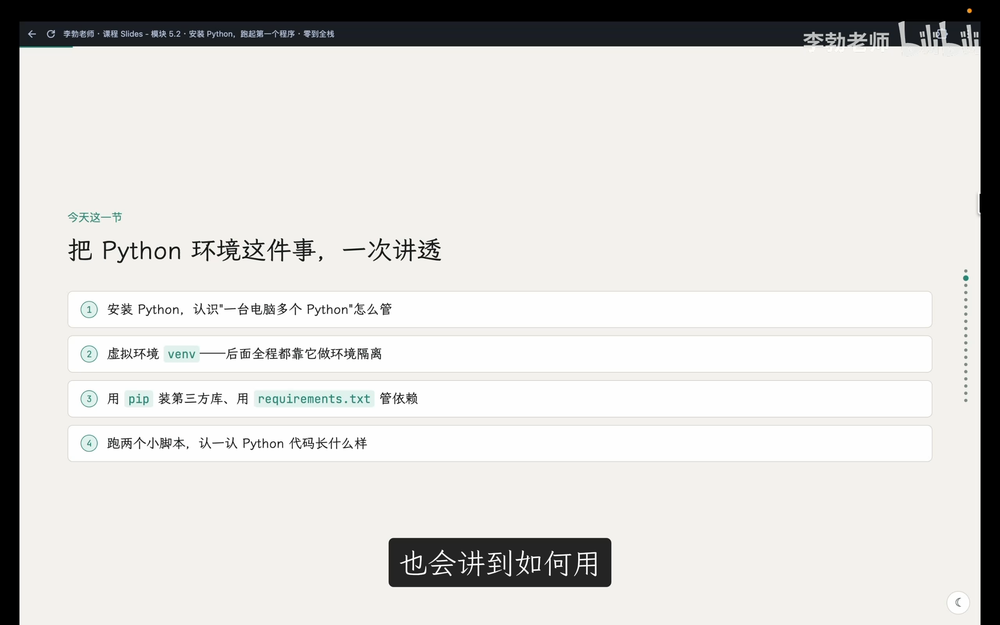
📷 本节学习路线与核心大纲
在 B 站中打开 (00:00:45)
检查系统现存版本
在盲目下载安装器之前，应当首先在终端中探测当前系统是否已预装 Python：
- macOS / Linux 系统：
bash python3 --version - Windows 系统：
cmd python --version # 或通过 py 启动器 py --version
终端的返回通常有以下三种典型情况：
1. 输出 Python 3.x.x：系统已就绪现代化 Python 环境。如果当前已有日常使用的版本且无破坏性需求，可直接使用；若版本较为陈旧，推荐安装最新稳定版。
2. 输出 command not found 或提示无法识别命令：系统未配置环境变量或未安装 Python，需要进行全新安装。
3. 输出 Python 2.7.x：必须引起高度警惕。Python 官方早在 2020 年已正式终止对 Python 2 的所有维护，全栈现代后端项目严禁使用 Python 2。
官方安装流程
访问 Python 官方网站下载页面，官网会自动识别当前访问操作系统并推荐适配安装包：
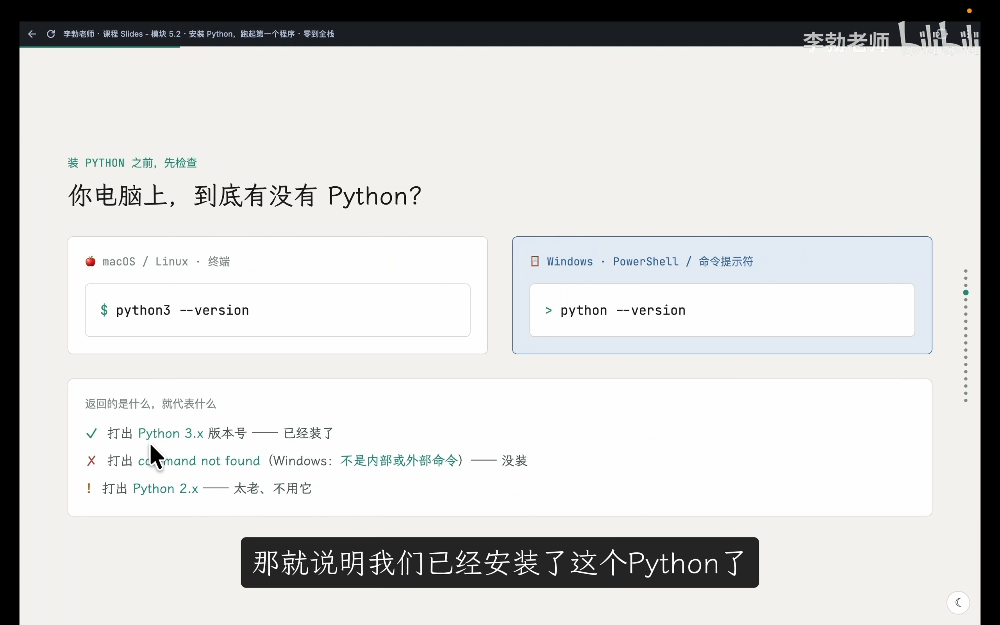
📷 Python 官方网站下载首页
在 B 站中打开 (00:03:02)
- macOS 用户：下载
.pkg离线安装包，按照引导一路点击“继续”并同意许可协议完成安装。 - Windows 用户：下载
.exe安装程序。极其关键的一步：在安装首屏务必勾选底部Add python.exe to PATH（将 Python 添加至系统环境变量），否则在终端直接输入python将无法定位执行程序。
[!IMPORTANT] 安装完成后，必须完全关闭并重新打开终端窗口，以使全新的系统 PATH 环境变量生效。
2. Python 版本历史与多版本共存管理
(参考时间: 04:35)
许多初学者常常困惑：为什么在 macOS 或 Linux 上往往要敲 python3，而在 Windows 或部分环境敲 python 也可以？这背后有一段软件工程演进的阵痛史。
timeline
title Python 历史与解释器命令演进
1991 : Python 语言诞生
2000 : Python 2.0 发布 (奠定生态基石)
2008 : Python 3.0 发布 (彻底切断向后兼容性)
2008-2020 : 割裂过渡期 (Linux/macOS 约定: python 对应 2.x, python3 对应 3.x)
2020 : Python 2 正式退役 EOL
现代生态 : 新系统/Windows 逐渐将 python 指令默认指向 Python 3
- Python 2 与 3 的不兼容大版本裂变：2008 年发布的 Python 3 修复了早期语言设计层面的大量历史包袱（如 Unicode 字符串处理、print 作为函数等），但彻底不兼容 Python 2。为了保证操作系统内置脚本不崩溃，Linux 与 macOS 形成硬性约定：
python专用于 Python 2，而python3指向新版。 - 现代系统的回归：随着 Python 2 全面退役，现代 Windows 官方安装器与部分前沿 Linux 发行版已将
python直接重定向至 Python 3。
精准定位当前的解释器路径
当单台计算机因各类软件安装了多个 Python 解释器时，敲下命令究竟由哪个二进制程序接管？我们可以通过路径追踪命令排查：
- macOS / Linux：
bash which python3 # 列出所有在 PATH 中的候选可执行程序（排在最前的为当前生效者） which -a python3 - Windows CMD：
cmd where python - Windows PowerShell：
powershell Get-Command python
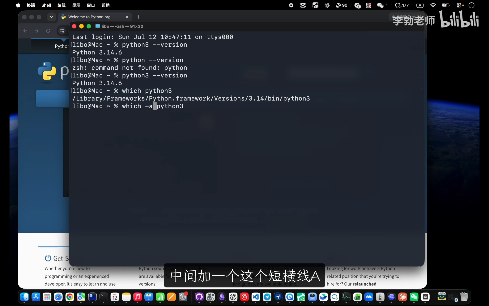
📷 使用 which -a 命令排查系统中并存的 Python 路径
在 B 站中打开 (00:08:50)
如果需要强制使用特定版本的解释器执行脚本，无需修改全局环境变量，直接使用完整二进制路径或精确版本号调用即可：
# 直接指定绝对路径执行
/Library/Frameworks/Python.framework/Versions/3.13/bin/python3 script.py
# 或是带小版本号的命令调用
python3.13 script.py
3. 全局安装的困境：为什么必须使用虚拟环境？
(参考时间: 11:20)
在前端工程中，所有依赖默认下载到项目根目录下的 node_modules/ 中，实现了工程间的物理隔离。然而，Python 官方包管理工具 pip 默认的行为是将所有第三方库安装到 Python 解释器自身的系统级或全局目录（如 /site-packages/）。
这种“全局共享”模式在多项目开发时会引发严重的依赖冲突（Dependency Hell）：
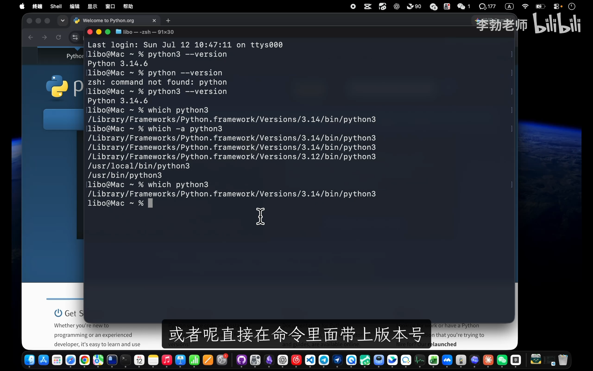
📷 多项目依赖相同包的不同版本引发全局覆盖冲突
在 B 站中打开 (00:10:05)
graph TD
subgraph GlobalTrouble ["未隔离模式（全局污染与版本冲突）"]
GlobalPython["全局 Python /site-packages"]
ProjA["Project A<br/>需要 Pandas 1.5"] -->|覆盖升级| GlobalPython
ProjB["Project B<br/>需要 Pandas 2.2"] -->|版本冲突报错!| GlobalPython
end
subgraph VenvIsolationMode ["虚拟环境隔离模式（最佳实践）"]
VenvA["Project A/.venv<br/>Pandas 1.5"]
VenvB["Project B/.venv<br/>Pandas 2.2"]
ProjA_ISO["Project A 代码"] --> VenvA
ProjB_ISO["Project B 代码"] --> VenvB
end
如上图所示，当 Project A 依赖 pandas 1.5，而 Project B 依赖 pandas 2.2 时，全局安装会导致后安装的版本强制覆盖前者，导致依赖旧接口的项目直接运行崩溃。
解决方案与前端哲学一致：依赖必须跟随项目走。Python 官方自 3.3 起内置了轻量级虚拟环境工具 venv。
4. venv 核心机制：创建、激活与退出
(参考时间: 14:05)
venv 会在项目根目录下创建一个专属沙箱文件夹（通常命名为 .venv），内部包含该项目专用的 Python 二进制替身（符号链接或副本）及独立的依赖存放目录。
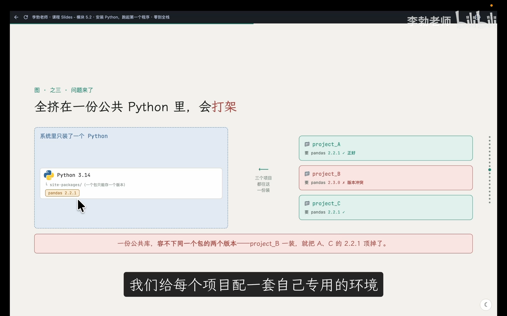
📷 虚拟环境 venv 在项目根目录下的隔离结构
在 B 站中打开 (00:14:00)
虚拟环境核心三板斧
| 操作阶段 | 命令语法 (macOS / Linux) | 命令语法 (Windows PowerShell) | 核心原理解析 |
|---|---|---|---|
| 1. 创建环境 | python3 -m venv .venv |
python -m venv .venv |
依据当前运行的 Python 解释器在当前目录构建沙箱骨架 |
| 2. 激活环境 | source .venv/bin/activate |
.venv\Scripts\Activate.ps1 |
修改当前终端进程的 $PATH 变量，将沙箱 bin 置于最前 |
| 3. 退出环境 | deactivate |
deactivate |
还原终端进程的环境变量设置，退出沙箱 |
[!NOTE] 创建命令中
python3 -m venv的含义是：调用 Python 解释器的-m（module）参数将内置模块venv作为脚本运行。所创建虚拟环境的 Python 小版本完全取决于执行该命令时的宿主 Python 版本。
终端指示符与激活验证
执行激活命令后，终端提示符最前方会出现括号标记 (.venv)，这表明虚拟环境已完全接管当前终端会话：
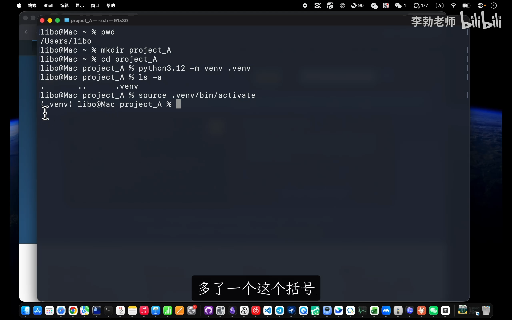
📷 激活虚拟环境后终端行首出现 .venv 标识
在 B 站中打开 (00:19:10)
在激活状态下：
* 无论是执行 python 还是 python3，都会毫无歧义地指向 .venv 内部的解释器；
* 执行 pip install 安装的所有第三方模块均会被锁在 .venv 内，绝对不会污染外部系统。
自定义环境提示符（--prompt）
如果开发机上存在多个处于激活状态的项目，默认的 (.venv) 提示符无法一眼分辨当前所在工程。venv 提供了 --prompt 参数支持定制环境名：
python3 -m venv --prompt ProjectB .venv
source .venv/bin/activate
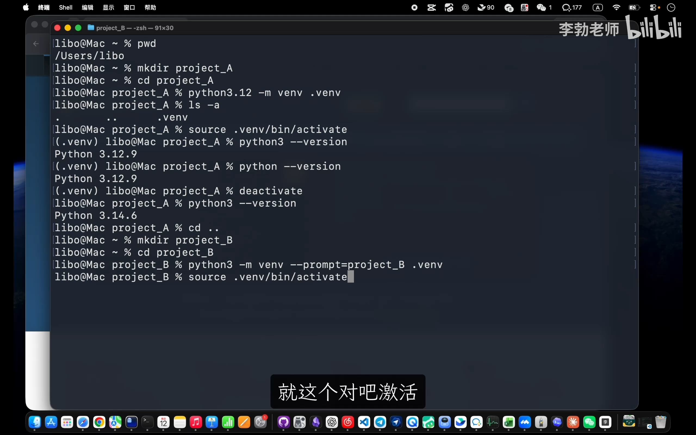
📷 使用 --prompt 自定义提示符名称 ProjectB
在 B 站中打开 (00:23:45)
此时命令行行首会明确展示 (ProjectB)，而项目内的隔离文件夹依然保持规范的 .venv 名称。
5. Conda 用户避坑：与 venv 的选型决策
(参考时间: 24:10)
很多从事人工智能、数据分析的同学电脑中已经预装了 Anaconda 或 Miniconda。打开终端时，行首默认会带有一个 (base) 前缀。
graph LR
subgraph CondaMode ["Conda 集中化管理模式"]
CondaCore["Conda 全局安装器"]
EnvBase["~/.conda/envs/base"]
EnvPy39["~/.conda/envs/py39"]
EnvPy312["~/.conda/envs/py312"]
CondaCore --> EnvBase
CondaCore --> EnvPy39
CondaCore --> EnvPy312
ProjX["本地项目代码"] -.->|人脑记录或指令挂接| EnvPy312
end
subgraph VenvMode ["venv 原生项目内嵌模式 (Vibe Coding 首选)"]
ProjRoot["项目工程根目录"]
SrcCode["src / 业务代码"]
LocalVenv[".venv 专属环境目录"]
ReqTxt["requirements.txt"]
ProjRoot --> SrcCode
ProjRoot --> LocalVenv
ProjRoot --> ReqTxt
end
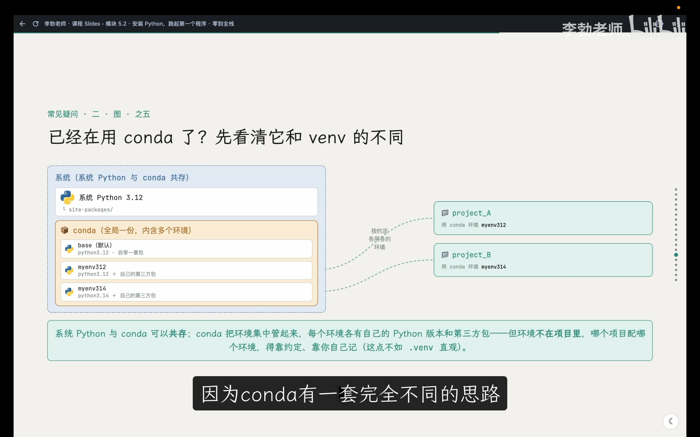
📷 Conda 集中管理机制与全局 base 终端状态
在 B 站中打开 (00:25:10)
为什么在现代全栈与 AI 协作（Vibe Coding）时代推荐 venv？
- 信息自内聚：
venv的环境与配置直接内嵌在工程目录下。IDE（如 VS Code、Cursor）以及智能编程 Agent 一旦打开项目目录，能瞬间识别环境版本与依赖，无需人工跨目录绑定。 - 严禁环境叠加：切忌在已激活的 Conda
(base)环境中再次运行source .venv/bin/activate，多重虚拟环境路径互相嵌套会引发动态链接库调用紊乱。 - 关闭 Conda 自动激活：
如果希望跟着全栈课程采用原生
venv标准，推荐禁用 Conda 打开终端时的自动接管：bash conda config --set auto_activate_base false关闭后重启终端，行首的(base)标识彻底消失，系统恢复干净清爽的环境。
6. 工程化实践：为 zero-to-tech 接入后端模块
(参考时间: 30:00)
现在，我们将这些理论正式落地到从第 1 讲一路陪伴我们的全栈项目 zero-to-tech 中。
目录结构规划与职责边界
在 zero-to-tech 项目根目录下，新建 backend/ 目录用于承载后端代码体系：
zero-to-tech/
├── app/ # Next.js 前端路由与页面
├── public/ # 前端静态资产
├── out/ # 前端静态导出产物
├── package.json # Node.js 依赖描述文件
└── backend/ # 👈 全新开辟的独立后端工程
└── .venv/ # 👈 后端独立隔离的 Python 虚拟环境
[!NOTE] 有同学会问：是否需要顺便将原本根目录的前端代码也挪入
frontend/文件夹做“对称”？ 完全没有必要。 真实企业级演进项目中切忌无意义的过度重构。前端目录此前已与 Nginx 配置、Git 历史深度绑定；前后端解耦的核心本质在于独立的运行时进程、独立的依赖管理、独立的部署流，绝不在于文件夹名称的对称。
初始化后端专用虚拟环境
进入 backend 目录，创建提示符为 zero-to-tech 的专属沙箱并激活：
cd backend
python3 -m venv --prompt zero-to-tech .venv
source .venv/bin/activate
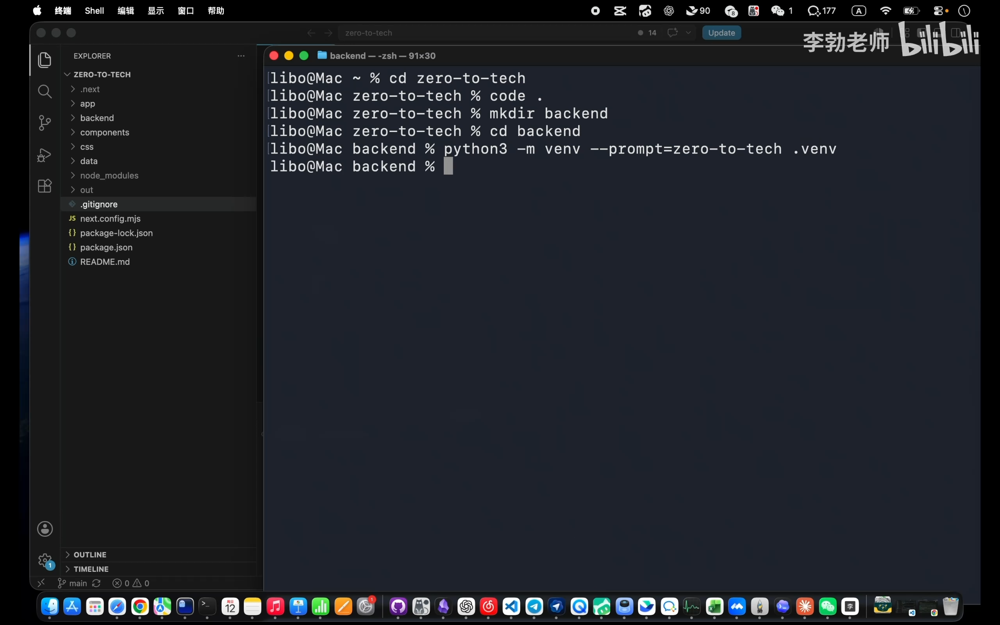
📷 在 backend 目录下创建并激活 zero-to-tech 虚拟环境
在 B 站中打开 (00:32:30)
VS Code 智能集成与终端自动激活
在 VS Code 扩展市场安装官方 Python（含 Python Environment Manager）插件。该插件会自动扫描工程根目录与子目录下的 .venv 解释器。
安装完成后，在 VS Code 内部新建终端并切换到 backend/ 时，插件会自动注入环境变量激活命令，无需每次手动敲击 source 指令：
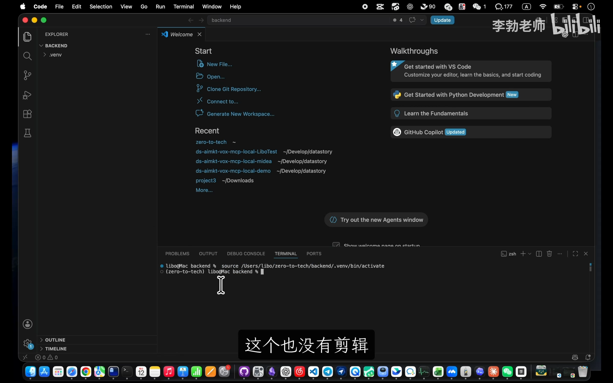
📷 VS Code 终端自动识别 .venv 并自动激活虚拟环境
在 B 站中打开 (00:34:20)
必须配置的 Git 忽略项
正如前端的 node_modules 绝不可提交至版本库一样，.venv 包含海量机器本地特定的二进制与动态链接文件，绝不能污染代码仓库。
在项目根目录的 .gitignore 中追加一行：
# 忽略后端 Python 虚拟环境
backend/.venv/
.venv/
7. 运行第一个 Python 程序：初识语法特色
(参考时间: 35:50)
在 backend/ 目录下创建第一个 Python 脚本 first_json.py：
import json
site_name = "zero-to-tech"
def make_data():
data = {"message": "hello, world", "from": site_name}
return json.dumps(data)
print(make_data())
在激活的虚拟环境中直接运行：
python first_json.py
终端将打印出序列化后的 JSON 字符串：
{"message": "hello, world", "from": "zero-to-tech"}
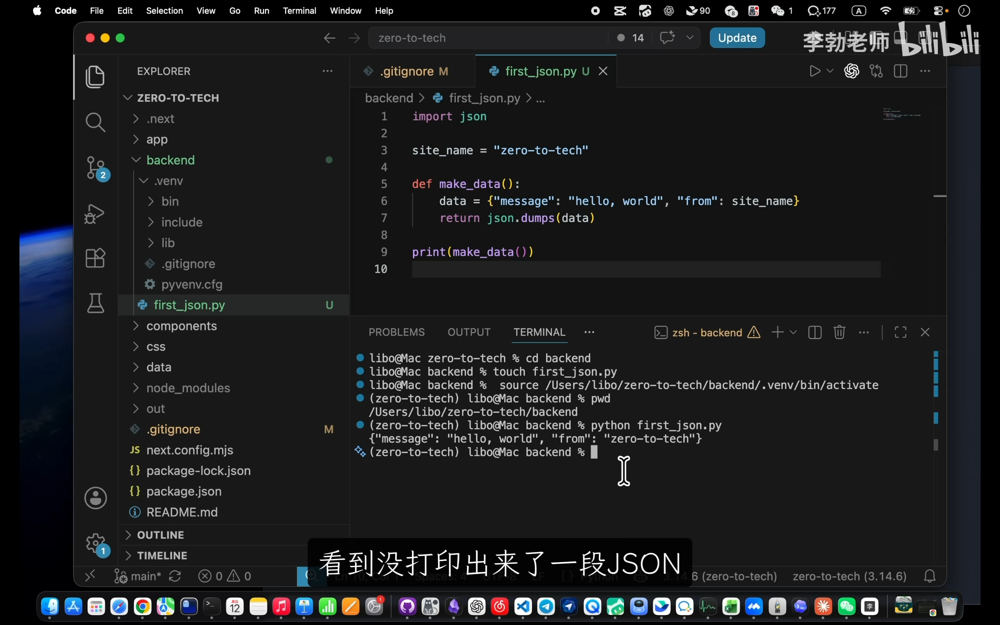
📷 first_json.py 成功运行并输出 JSON 字符串
在 B 站中打开 (00:37:45)
Python 语法初印象与核心特征
- 内置标准库（Standard Library）：
import json调用的 JSON 模块由 Python 官方直接预装自带，无需网络下载，开箱即用。 - 直观的变量赋值：无需前端的
let / const / var声明关键字，直接使用变量名 = 值即可。 - 冒号与强制缩进（Indentation）：Python 抛弃了 C/Java/JavaScript 传统的大括号
{}作用域语法，使用冒号:+ 4 个空格对齐界定代码块范围。缩进即语法，缩进不规范代码会直接引发IndentationError。 - 简洁的终端输出：直接通过内置函数
print()打印内容至标准输出流。无需编译、打包或浏览器渲染，即写即跑。
8. 包管理与依赖固化：pip 与 requirements.txt
(参考时间: 40:20)
接下来我们尝试使用 Python 编写网络请求逻辑。新建 api_demo.py：
import requests
resp = requests.get("https://api.ipify.org?format=json")
print(resp.json())
保存后直接执行：
python api_demo.py
此时终端抛出经典错误：
ModuleNotFoundError: No module named 'requests'
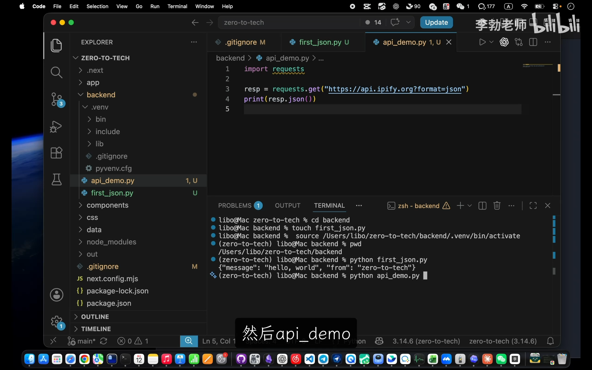
📷 运行缺少依赖的脚本触发 ModuleNotFoundError 报错
在 B 站中打开 (00:41:58)
用 pip 安装第三方库
报错信息清晰明了：Python 标准库中并不包含 requests 模块。它属于开源社区最著名的 HTTP 客户端第三方库，类似于前端生态中的 axios。
使用 Python 官方包管理器 pip（随 Python 一起安装）下载安装：
pip install requests
pip 会解析依赖树，将 requests 及其底层的 urllib3、certifi、idna、charset-normalizer 依赖链完整拉取至本地。
检查依赖落盘路径
使用 pip show 查看安装详情：
pip show requests
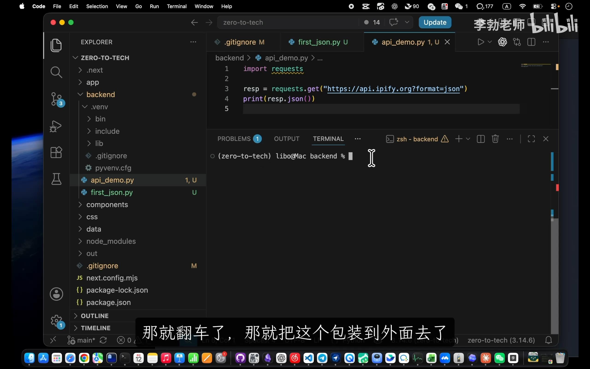
📷 pip show 验证依赖库真实安装于 backend/.venv 沙箱目录中
在 B 站中打开 (00:43:30)
从输出的 Location: /.../zero-to-tech/backend/.venv/lib/python3.x/site-packages 可以清楚看到，依赖库精准存放在当前项目的 .venv 内部，完全隔离于操作系统全局环境。
再次运行程序，成功在终端打印外网 IP 数据：
python api_demo.py
# 输出: {'ip': '209.141.46.182'}
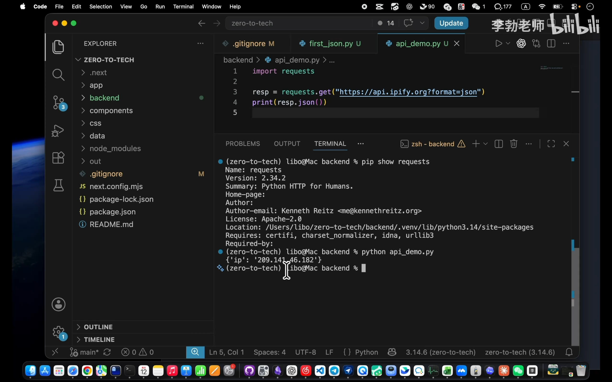
📷 api_demo.py 运行成功，打印出 API 响应内容
在 B 站中打开 (00:45:25)
依赖版本固化：requirements.txt
既然 .venv 目录被 Git 忽略，团队其他成员拉取代码或后续部署到云端 Linux 服务器时，如何还原完全一致的 Python 依赖生态？
前端使用 package.json 记录包信息，而 Python 生态的标准规范是 requirements.txt：
flowchart LR
subgraph DevEnv ["本地开发环境 (backend/.venv)"]
PipEnv["已安装 requests, urllib3 等"]
PipFreeze["pip freeze > requirements.txt"]
PipEnv --> PipFreeze
end
subgraph GitRepo ["Git 代码版本库"]
ReqFile["requirements.txt (被版本控制跟踪)"]
PipFreeze -->|git push| ReqFile
end
subgraph ServerEnv ["生产 Linux 服务器 / 团队新成员"]
ServerPip["pip install -r requirements.txt"]
ReqFile -->|git clone| ServerPip
ServerPip --> BuildNewEnv[".venv 100% 还原一模一样依赖环境"]
end
在激活的虚拟环境中，将当前安装的所有库及其精确版本号导出：
pip freeze > requirements.txt
生成的 requirements.txt 包含了精确版本锚定（Pinned Version）：
certifi==2024.12.14
charset-normalizer==3.4.1
idna==3.10
requests==2.32.3
urllib3==2.3.0
任何人拿到该工程后，只需进入虚拟环境执行一条命令，即可全自动无缝补齐所有依赖：
pip install -r requirements.txt
[!IMPORTANT]
requirements.txt是项目源代码不可分割的一部分，必须提交至 Git 仓库。
9. 新手避坑与本节小结
(参考时间: 48:20)
避坑：系统桌面应用图标的迷惑
在 macOS 系统完成 Python 官方包安装后，“启动台（Launchpad）”中往往会出现形如 IDLE、Python Launcher 或带有版本号的图形应用程序图标。很多新手点击后发现界面毫无响应或弹出一个极简控制台，误以为安装失败。
解惑：这些属于 Python 早期的历史遗留小工具。现代化全栈 Python 开发完全基于命令行终端与专业 IDE（如 VS Code），请勿理会启动台中的图形图标，保持终端调用即可。
核心知识图谱速查
| 概念维度 | 核心概念 | 关键指令 / 文件 | 全栈对比映射 |
|---|---|---|---|
| 运行时 | Python 3 解释器 | python3 --version, which python3 |
Node.js (node -v) |
| 隔离沙箱 | venv 虚拟环境 | python3 -m venv .venv, source .venv/bin/activate |
node_modules 独立隔离机制 |
| 包管理工具 | pip | pip install <package>, pip show <package> |
npm / pnpm |
| 依赖清单 | 版本锁定配置 | pip freeze > requirements.txt, pip install -r requirements.txt |
package.json + package-lock.json |
至此，我们的 zero-to-tech 项目已成功开辟独立的后端开发领地，完成了语言运行时安装、虚拟环境沙箱构建、VS Code 自动化终端集成与依赖固化管理。在下一节中，我们将手搓一个 HTTP API 服务，从协议底层彻底解密浏览器与后端服务器之间的数据交互对话。